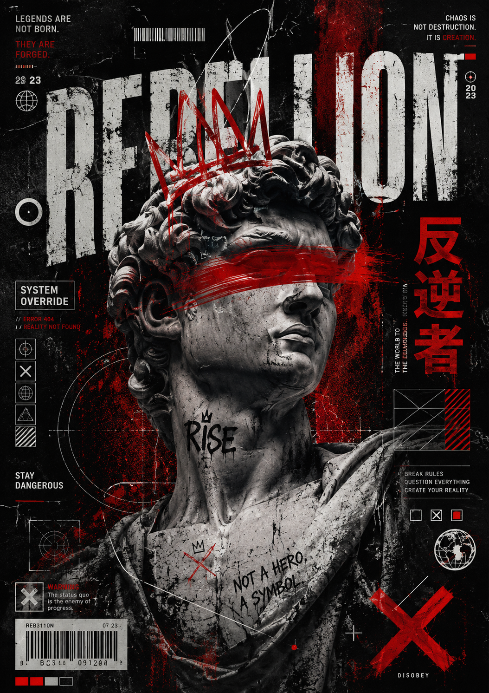
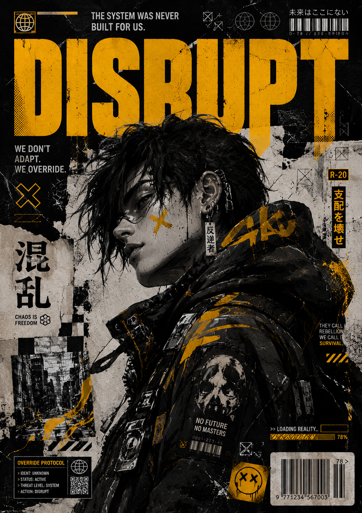
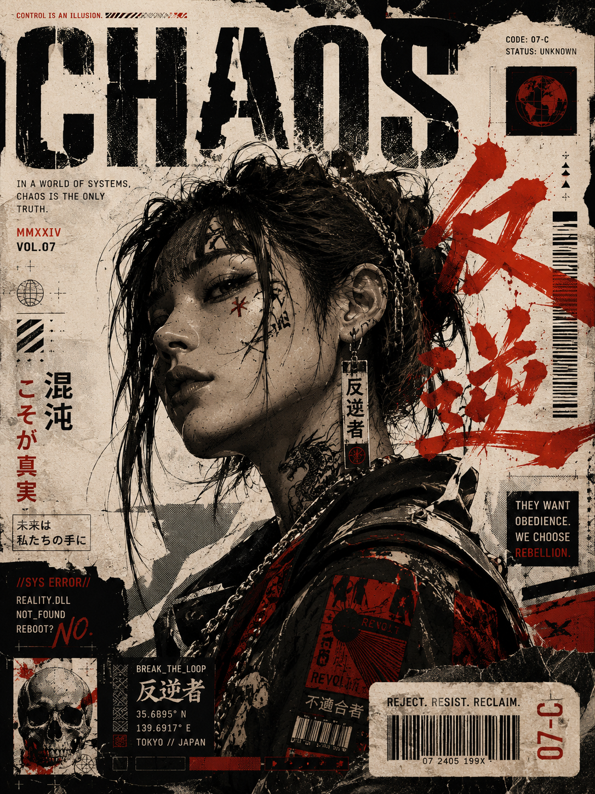

BUILD.
BREAK.
SECURE.
Nidhin Dev D — developer, designer and cybersecurity professional. I build digital experiences, experiment with visuals and think like an attacker so products can be stronger.
Ideas → useful
digital experiences.
A hybrid skill set across engineering, design and security.
Development
Modern web and application development with clean architecture and practical UX.
Design
Visual systems, interfaces, graphics and digital experiences with personality.
Ethical Hacking
Vulnerability assessment, penetration testing and security-first thinking.
SOC Analysis
Security monitoring, threat analysis and incident-focused investigation.
Latest & greatest.

REBELLION: Chaos Forged in Stone
Cyberpunk / neo-classical art direction.

DISRUPT: Override the System
Gritty digital rebellion.

CHAOS: Reject the System
Neo-grunge / cyberpunk visual language.

I build things. I question things. I secure things.
My work sits at the intersection of technology and creativity. I enjoy turning rough ideas into polished products, while keeping performance, usability and security in the room from day one.